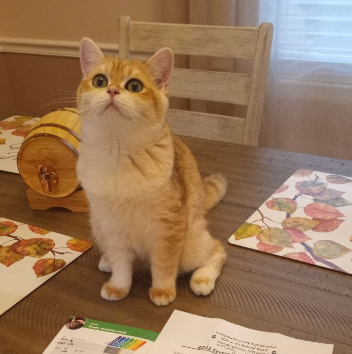
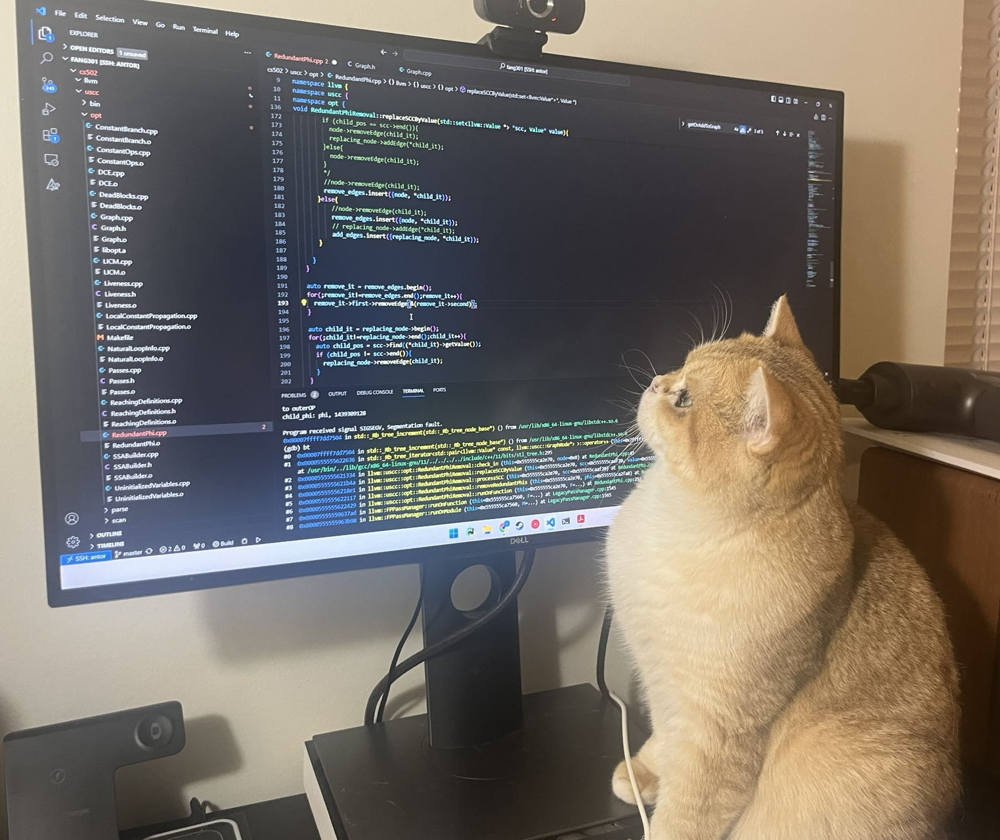
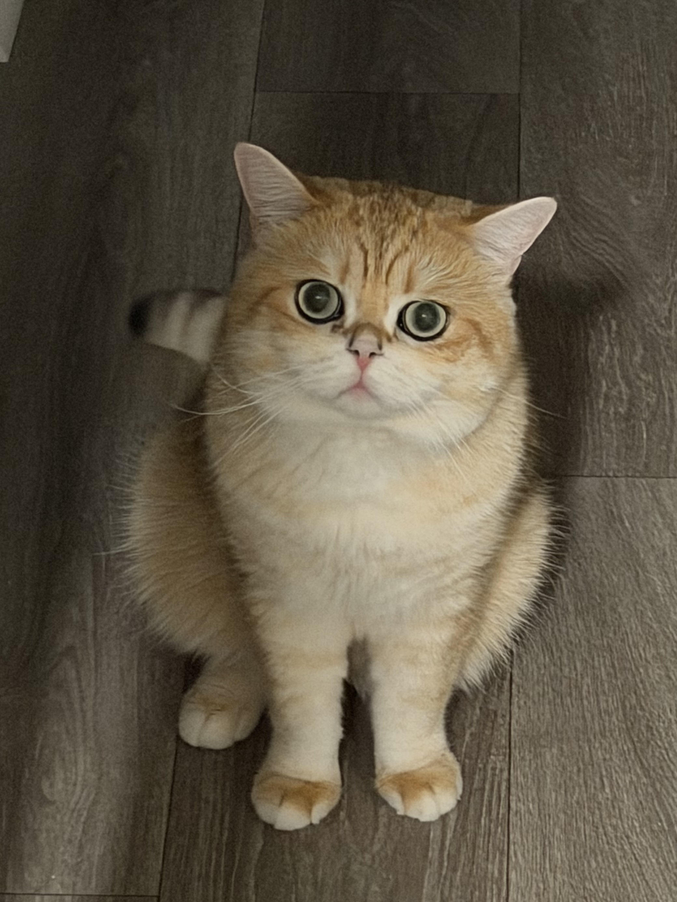

About Me
I am a Ph.D. candidate in Computer Science at Purdue University, advised by Dr. Changhee Jung. I design hardware mechanisms that address energy and performance bottlenecks in real-world workloads, with a focus on energy-efficient microarchitecture, cache optimization, and intermittent computing.
Publications
Experience
- Computer Architecture Research Intern
- SoC Modeling Intern
- HPC Library Engineer Intern
- Computer Architecture Intern
Recognitions
- 2026-2027 Bilsland Dissertation Fellowship
- ISCA 2025 Best Paper Honorable Mention
Mentees
- Sam Xu, MS @ Georgia Tech to AI Hardware Engineer @ Tesla
- Sotirios Kougiouris, MS @ Purdue
- Chewon Yu Park, BS @ Purdue to MS @ Georgia Tech
- Zhanyue Zhang, MS @ UT Austin
- Khanh Nguyen, BS @ Purdue
- Dongho Choi, BS @ Seoul National University to Ph.D. @ Seoul National University
- Aditya Gupta, BS @ Purdue to SDE @ Theom
- Sikang Sun, BS @ Purdue to Ph.D. @ Purdue
Meow




Dax is a three-year-old British Shorthair who joined our family in the fall of 2023. He's also my dedicated late-night companion, faithfully helping me debug ideas and polish papers along the way.